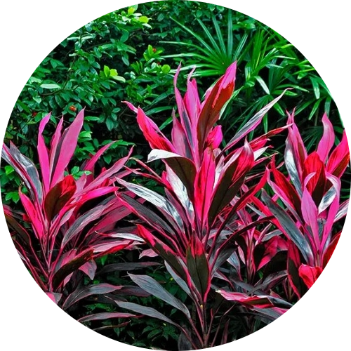

Hawaiian Ti
Water: Once every 1-2 weeks.
A bright place where light can be filtered is a perfect spot for the Ti. Avoid direct sunlight as it can scorch its leaves. Water the whole plant from the top rather than the bottom. Consider a good drainage system to avoid root rotting. Water once every 1-2 weeks when soil is dry.